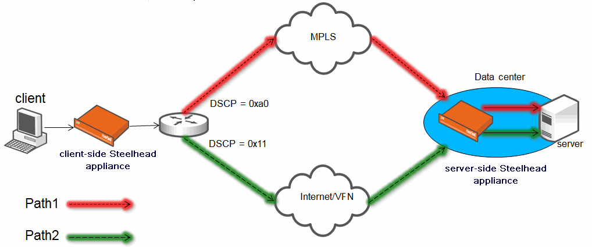
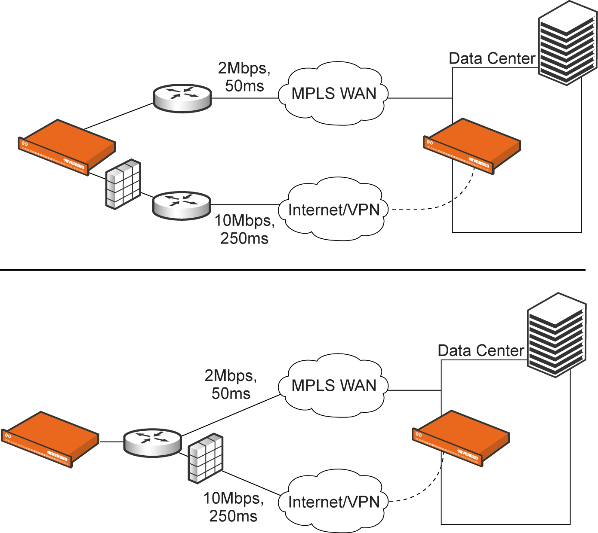

QoP chooses the best or most appropriate WAN path for a given application in real-time. A common use of QoP is to route voice and video over an expensive, high-quality MPLS link, while offloading less time-sensitive business traffic over a less expensive Internet VPN link. This solution provides the right performance levels for your applications and saves on bandwidth costs by optimizing the use of available bandwidth.Using QoP, you can select a path for each packet based on the state of the links and your network configuration. At a high level, you can configure multiple paths for each connection by specifying rules based on various parameters. The Steelhead appliance monitors the state of the path and, based on this, selects the appropriate path for a packet. Selecting appropriate paths for packets provides more control over network link use.You can define a path by the interface that the packet is sent out on, and you can enforce the next hop downstream router for that packet or a path based on the DSCP mark on the packet.For each application, you also specify parameters to monitor path availability; you configure the latency of the path (timeout) and the loss observed (threshold). QoP uses ICMP pings to monitor the path state dynamically. If the ping responses do not make it back within the probe timeout setting or the system loses the number of packets defined by the loss threshold, it considers the path to be down and triggers an alarm indicating that the path is unavailable.If one path fails, the Steelhead appliance directs traffic through another available path. When the original path comes back up, the Steelhead appliance redirects the traffic back to it.In this configuration, the Steelhead appliance uses one path going out because there is just one in-path interface. However, the downstream router uses Policy-Based Routing (PBR) based on the DSCP mark on the packet. PBR is a packet redirection mechanism that allows you to define policies to route packets instead of relying on routing protocols. PBR redirects packets to Steelhead appliances that are in a virtual in-path deployment.To monitor the path, you can configure a remote IP that is reachable only from the MPLS link and another remote IP that is reachable only from the Internet link. You configure DSCP marks for each application in case the Steelhead appliance selects the primary path. Similarly, you configure a DSCP mark for the secondary path for each application.For details about PBR, see the Steelhead Appliance Deployment Guide.The Steelhead appliance monitors both remote IP addresses and selects the primary path if the remote IP address associated with the primary path is reachable, and the secondary path if it is not reachable. The probes monitoring the remote IP address do not need to have a DSCP marking; however, you can configure a DSCP mark on the probe. This use case assumes that you configure the network so that the probes take the appropriate path.Figure 6‑13. QoP Path Selection by Downstream RouterIn this configuration, you have multiple paths from the Steelhead appliance to the remote data center. The Steelhead appliance selects which path to use. For each application, you define the primary path as a combination of the outgoing interface (wan0_0 or wan0_1) and the next hop IP address. QoP must send the probe packets over the exact path that the data packets take.In this configuration, you define a primary path by specifying the wan0_0 interface and the secondary path as the wan0_1 interface. Suppose that the Steelhead appliance selects the primary path for the application. In this case, it does not matter whether it sends the packet to path 1 or path 2. In both cases, the Steelhead appliance selects the MPLS path.To probe for the remote IP in this configuration, the Steelhead appliance first needs to learn the next hop to use and only then send a probe over the correct interface. In case of the wan0_0 path, this next hop might be path 1 or path 2. To learn the next hop, the Steelhead appliance must first route the probe packet towards the remote IP. In most cases, it selects the default gateway as the next hop. This default gateway may be R4, which is on the LAN side. After sending the probe packet, the Steelhead appliance sees a ricochet for that packet and sends this packet towards path 1 or path 2. After learning from this ricochet, it stores the destination MAC address on the probe packet. This destination MAC is either the MAC address of path 1 or path 2.While probing for the remote IP address from wan0_0, the probe packets use either R1 or R2. The Steelhead appliance cannot monitor both paths because it does not know about them. Since it monitors only one path, it ensures that all data packets are also sent over that path. Assuming that the probe packets are being sent to the remote IP through R1, it cannot use path 2 to send data packets towards the server, because this path might be down. The Steelhead appliance does not route data packets, but simply uses the next hop learnt by probing.This configuration is possible when you do not care which interface the Steelhead appliance uses, as long as the packets go through a certain router (which you preconfigure to use the correct path). Unlike the previous use case, the Steelhead appliance does not need to learn the next hop IP address to use to send packets over this path, nor need to learn which interface to use to send packets out.The Steelhead appliance learns the path during probing. The Steelhead appliance sends ARP requests for the configured next hop from every relay, and if it can reach the next hop from that relay, it uses that relay. You do not need to route data packets, as they use the same next hop. The Steelhead appliance sends the packets out from the relay learnt during probing.In this configuration, you specify the next hop as well as the relay interface to use for a given path. This is the simplest case, because the Steelhead appliance does not need to learn anything during probing. The Steelhead appliance does not need to route data packets, as they use the next hop specified in the configuration. The Steelhead appliance sends the packets out of the configured relay.This section describes a deployment with a stateful firewall on the Internet/VPN link, as shown in Figure 6‑15. In this configuration, the path selection for the inner channels require special handling.Figure 6‑15. QoP Path Selection with a Stateful FirewallThe three-way handshake packets for all TCP flows always traverse the firewalled link. After looking up the rules, if the QoP needs to determine path information using DPI, all the initial data packets for the flow traverse the firewalled link until DPI classification is complete. When DPI classification is complete, the flow might continue to send packets on the firewalled link or might switch to the MPLS link. You can configure a list of default paths and use these paths until DPI is complete. Riverbed recommends disabling probe caching to always use rule-based default paths for SYN/ACK. This applies to both optimized and pass-through traffic. You can add a maximum of 128 paths. You cannot add more than 3 paths per rule. QoP is not compatible with RSP. You cannot base a path selection on VLANs. You cannot use a wildcard for the relay interface in the path definition. For example, you have to specify a relay interface for a path if you are not using PBR QoP. You cannot use VLAN transparency for connections that have been rerouted by QoP. You cannot configure LAN-side QoP. QoP does not handle ricochet of probe packets across relay interfaces. QoP does not handle LAN/WAN link failures. QoP does not support L2 WANs. QoP does not support inbound QoS, because the traffic has already traversed the initial path. The return path might not be the same as the forward path; which might lead to asymmetry. Consider enabling QoP on both Steelhead appliances. Fully transparent inner connections might require connection forwarding. QoP does not support IPv6. QoP supports virtual in-path PBR. You must not install any downstream appliance that does source MAC learning a hop away from the WAN side of the Steelhead appliance. QoP updates a source MAC address of a packet to that of the relay being used to transmit it (ip_addrs are unchanged). If source MAC learning is enabled on a downstream appliance that is present at next hop, the packets destined to the original source are updated with the MAC address of the Steelhead appliance. When processing the packet, the Steelhead appliance sees that the destination MAC address is that of itself and sends the packet up its stack instead of relaying it forward. QoP does not support WCCP unless it is in DSCP-only mode.
Applying QoS Policies Configuring Outbound QoS (Basic) Configuring Outbound QoS (Advanced)
|
|